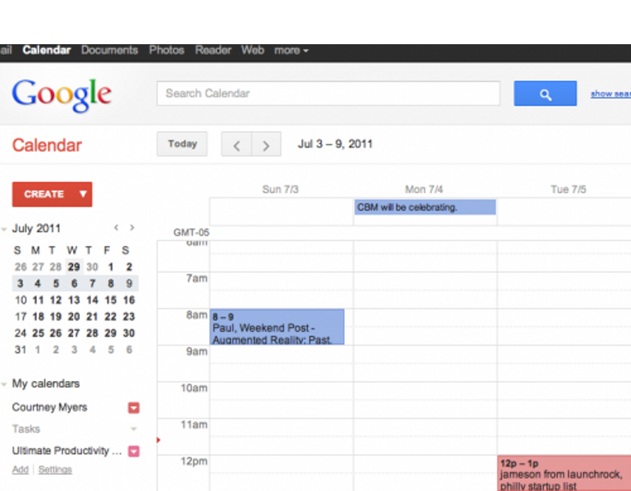
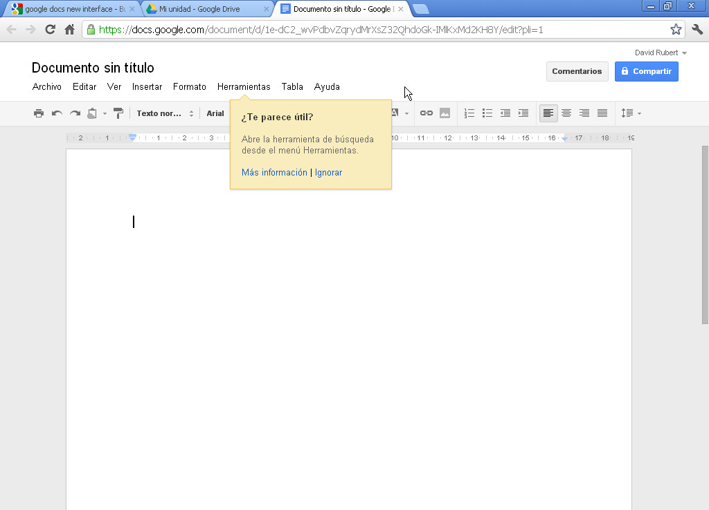
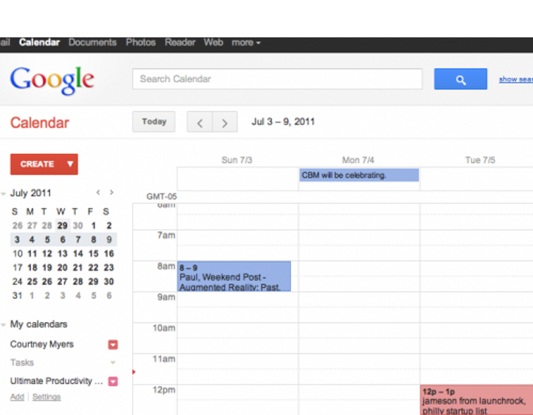
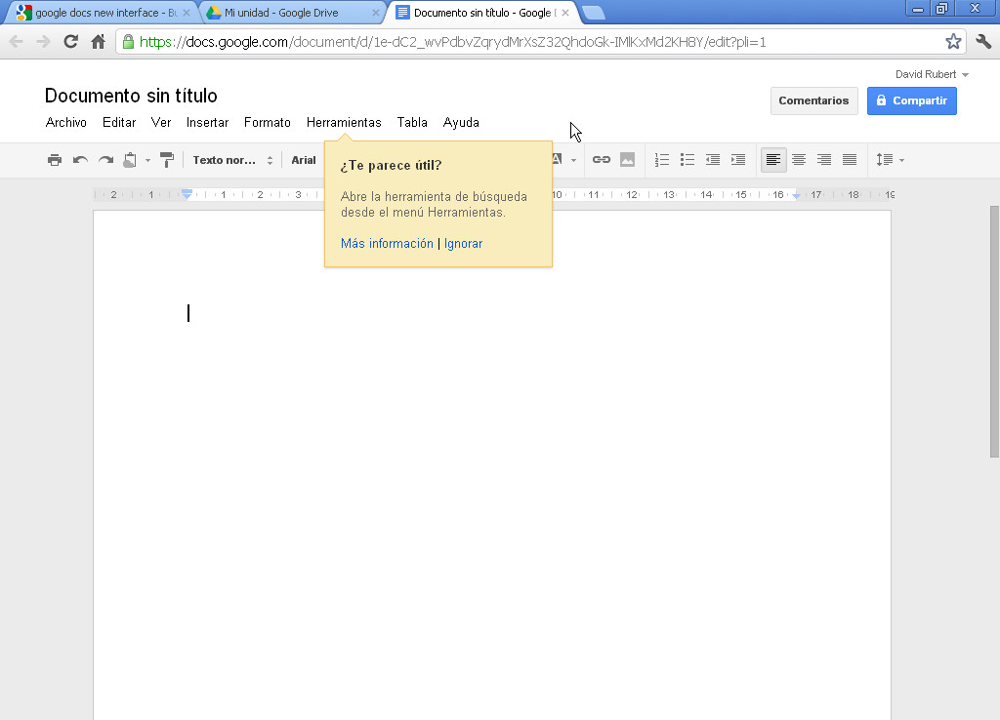

Gestión eficaz del tiempo en el trabajo
Apps
Descripción y funcionamiento
Apreta la tecla → para avanzar.

Son el ecosistema de aplicaciones de Google orientadas a comunicación y productividad. Han revolucionado el mundo de la informática al igual que en su momento lo hizo Microsoft Office, o el auge del correo electrónico.
Están compuestas por varias herramientas que interactuan entre sí en un entorno uniforme: correo electrónico (Gmail), contactos (Google Contacts), o calendario (Google Calendar)

Empezamos a utilizarlas en la universidad a finales de 2011. Cualquier persona con una vinculación con la universidad tiene acceso a las Google Apps dentro del ámbito universitario.

Servicio de correo electrónico de alta disponibilidad, alta capacidad de almacenamiento, integración completa con todas las aplicaciones Google y gratuito.
Aplicacion integrada dentro de Gmail para gestión de contactos. Pero no sólo información de correo sino de todo tipo.

Agenda y calendario electrónico de Google, sincronizado con los contactos del correo de manera que podemos compartir eventos o calendarios.
Suite de ofimática para creación de todo tipo de documentos en línea, con la posibilidad de edición colaborativa y compartición de documentos en grupo.
 




Cambia de foto con las teclas: ↑ y ↓